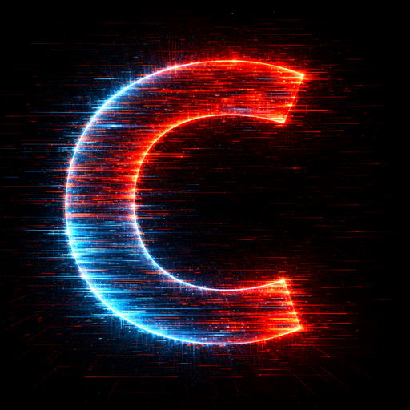

← Back to applications

Cyberpunk Wallpaper
AI-generated live and static 4K/HD wallpapers in cyberpunk, fantasy, sci-fi, spiritual and hacker-inspired styles — designed to give your phone a real visual upgrade.